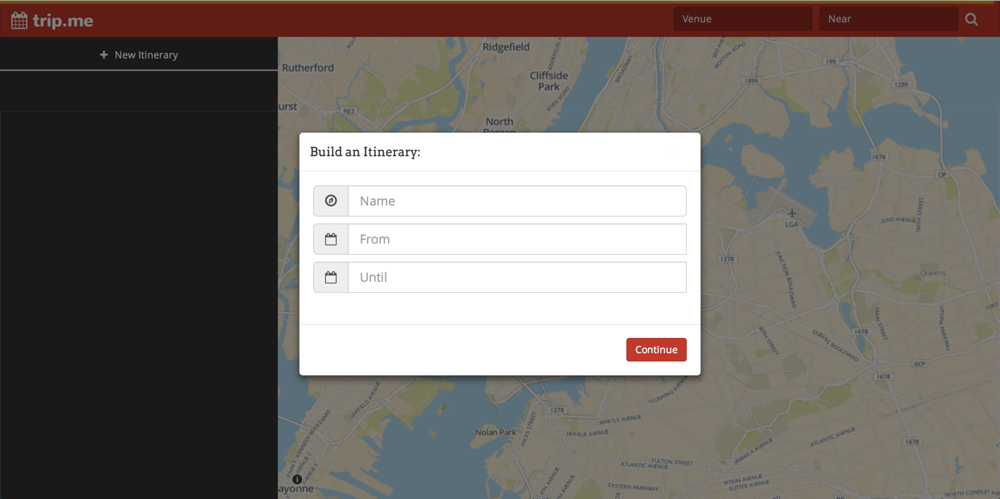
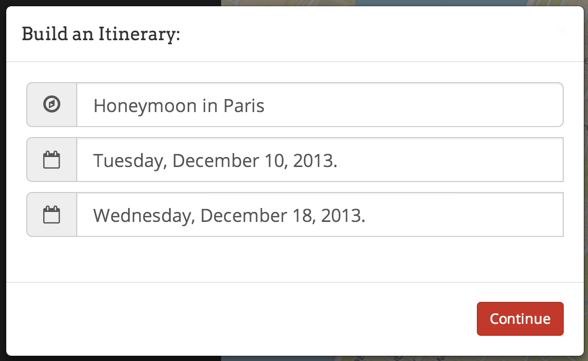
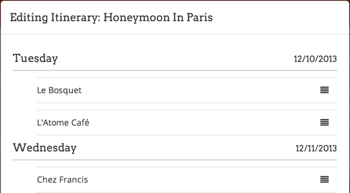

Hello World!
1) When you first open the trip.me website, you will be met with the following screen:
As you can see, there are two main areas in the website. On the left, you have the Itinerary Bar, that allows you to add new itineraries and edit existing itineraries. When you first open trip.me, the left bar will be empty except for the ‘+ New Itinerary’ button. On the right, we have a map view of your current location.
2) Go ahead and click on the ‘ + New Itinerary’ button below the trip.me logo. You should now see this screen:

This dialog box allows you to create your very first itinerary. Give your itinerary a name, a start and an end date (see figure below) and hit ‘Continue’.

An example of how to fill the ‘+ New Itinerary’ dialog box
3) Awesome! You have now created your first itinerary. You screen should now look like this:
Now, you can start adding Foursquare venues to your newly built itinerary. Type in one or more keywords about the kind of venue you want to find. For example, you can type “lunch” or “pizza” or “dinner, cheap”.
In the ‘Near’ field, type in the location. In our example, we are looking at Paris, so we’ll just use that. You can also type specific locations like ‘Eiffel Tower, Paris’. Then press enter or click the button.
4) You should now be able to see a variety of pinned locations on the map.
Explore the venue pins. Each pin will have the name of the venue, the type of venue it is, a picture and some more information. Once you decide which venue you want to add to your trip, click ‘+ Add to Itinerary’
5) Once you click the ‘+ Add to Itinerary’ button, you will see another dialog box. Using the drop down menus, choose which itinerary you want to add this venue to. You must also choose a particular date that you want to visit the venue.
Once you’re done, hit the ‘Save’ button. You will now notice that the left Itinerary Bar has changed to include the venue you selected under the appropriate itinerary and date.
6) Once you’ve added a bunch of venues you want to visit, you can always see more information about each venue by clicking on them from the Itinerary Bar on the left. This will give you a detailed ‘card’ view of the different characteristics of the venue, as reported by Foursquare. For example, you can see the rating, number of check-ins, the Mayor, etc.. You can also remove the venue from the itinerary through this dialog box by clicking the ‘Remove’ button. To close this box, click outside the box or hit the ESCAPE key on your keyboard.
7) So now you’ve decided where to go for coffee, lunch and dinner on Monday and Tuesday, but oh no! you find out that you have dinner with the President of France on Tuesday, so you’re going to have to edit your itinerary! Go ahead and click the button next to the name of the itinerary you want to edit.
You should now see the itinerary in ‘edit mode’, which allows you to delete venues from particular days of the itinerary. You can also drag the button to rearrange venues within the same day!

8) Shoot! The power just went off and now you’re afraid you’ve lost all your plans. Never fear! When you reopen trip.me, it’ll restore all your previously created itineraries. Remember, though, it’ll reset the map view to your current location so you’ll have to do your searches again to find new venues.
9) Phew! You’ve now finished planning your trip. Congratulations! In the unfortunate event that you need to cancel a particular itinerary entirely, go ahead and click the button. Remember, this action cannot be undone! You will be met with a dialog box that asks to confirm your action; hit ‘Yes’ if you’re sure you want to permanently delete the itinerary and ‘No’ otherwise.
10) Finally, use the button to the left of the ‘Venue’ textbox to open up this user manual if you ever need help. Thanks for using trip.me and have a great trip!